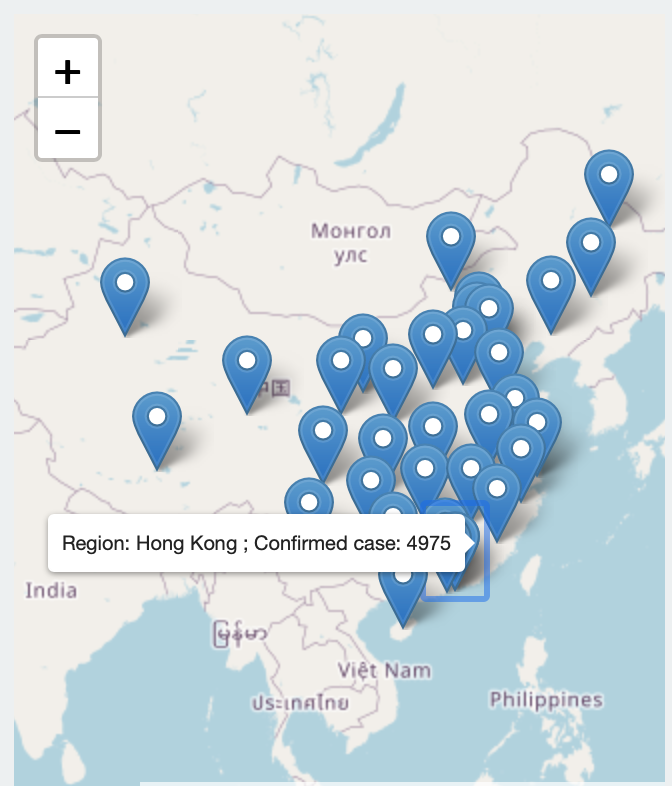
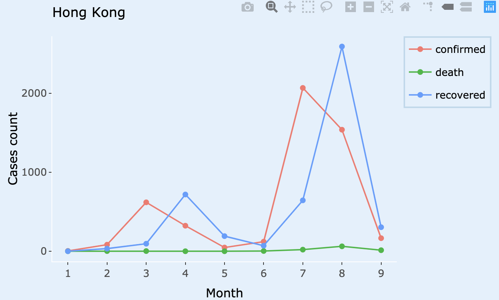

Shiny Application Introduction
The shiny application was produced by using the R package Shiny for the one of assessment in ETC5523 course, which is an interactive webiste application by updating user inputs. The application can be run on the remote host.
The main motivation behind this simple shiny app is designed to interactively visualize the situation of COVID-19 cases in three countries such as Australia, China and United Kingdom from January to September and provide a platform for performing and reviewing the change of cases distribution for each regions in all countries across time. All data used by this application are collected through coronavirus(Krispin and Byrnes 2020) package which is from RamiKrispin GitHub repo. The coronavirus dataset consists of measurements of case distribution between countries and regions across time, therefore it will be used and constructed a series of analysis to evaluate the situation of COVID-19 pandemic.
In addition, the Shiny app has the ability to make interactive visualization with corresponding the user input. Therefore,the four main visualization sections are contained in the application:
- A leaflet map displaying the confirmed case of COVID-19 in each region with its corresponding country where the users could select one country and then check its map. To turn on any of these layers, hover the mouse over the layers control box (top left of map, under zoom buttons) and select one layer,meanwhile, the province input value will be updated automatically once you selected region.

- A line plotly graph showing the time series data about how the three type of COVID-19 cases such as confirmed, death and recovered distributed from January to September in each corresponding region which should be updated region/province name by users input or clicking the region on the map.

- A pie plotly graph representing the proportion of each case type in different months in each specific region which can be updated by user input or clicking the region on the map. The each case type should be selected by clicking on a data point from the line plotly graph and then it will generate the proportion of this case type across time in each region.

- A table recording the number of confirmed,death and recovered case in each country from January to September where the users could select their country of interest.

Furthermore, there is an About tab to explain more details about the introduction and output of this COVID-19 Tracker shiny app. This is to give the user more clearly understanding about how to use this shiny app, and the illustration of each output
Self Review
1. What did you do well?
Firstly, I used the ‘leaflet_marker_click’ functionality for connecting with each region input and time series plot. In fact, this is similar with ‘event_data’ function but more specific in map construction. And I create an observe event and reactive value for leaflet click to connect successfully in province input and time series line graph.
In addition, by using the shiny theme with flatly to customize the better appearance of shiny apps, making it look more attractive and appeal. Also, adding the theme with ggplot2 to construct a appropriate time series plot,this helps me improve the skills for using different options to construct better data visualization. Furthermore, creating a table with kableExtra package by adjusting the styling and alignment to display more aesthetic.
2. What are the points you can improve on?
By examining this shiny apps, a several implementations can be improved. Firstly, the user input options such as selecting country or regions can be improved by selecting multiple choices rather than one options made. In this case, we could visualized clearly different regions or countries data to compare the situation of COVID-19 in these places. Also, the time series plot should be used in daily data instead of grouping in months to obtain the daily information about the change of COVID-19 case, therefore, the date range input should be added as well. This would allow to compare the data at a specific date in each region instead of adding in a month.
Furthermore, more informative explanation could be added in each plot or table once the user clicked the data point. While user clicking the time series or pie chart data point, an appropriate explanation abut the situation or proportion in this region would be provided, giving more understandable analysis for this app. In addition, the data tables could be improved by using DT table function to provide the more interactive visualization to the readers and reset the alignment for the column title which should be placed in the center.
3. What are some things that you’d like to add that’s plausible?
Expanding the scope of this application such as considering all the countries where are affected by COVID-19 to give more intuitively comparison about the change of COVID-19 cases in global. In addition, considering different measurement or response for coronavirus in each countries or region could be added,such as how do these countries impose lock-down measure to stem the spread of the coronavirus. Therefore, when the users updated the country or region input, the text would be displayed which could give more information about how this country or region reacting on coronavirus.
In addition, not only expanding the scope of the map, but also providing more detailed visualization of each country. In this case, it could show how the coronvirus has spread from China or throughout the world,giving more accurate depiction of the COVID-19 change. The further information would be included in the produced graphs as well.
4. What are some things that you’d like to add that cannot be done yet due to limitation in data or technology?
For the further exploration of COVID-19 and how it has been spread throughout in each country or region,a dynamic map would be constructed in new section. This dynamic map could be displayed the change of daily case in each country,which would be like a heat map to represent the level of COVID-19 cases in each country. And then it should be added data range input as well for providing the users to select their date of interest. However, based on the limitation of the coronavirus dataset, it has the limited information for region in each country and some of the region information are incorrect. Moreover, it is difficult for me to build up a heat map even though I tried it but it could not represent a good visualization for the dynamic map. In addition, I might use another dataset with more details in coronavirus to build a forecasting model like glm model and then predict next few days case for the country or region which the users would be able to select. By adding the forecasting model, this would provide more information to explore the COVID-19 case. But it need to distinguish the flexible or inflexible concept with the model construction and decide to use parametric or non-parametric method to build up the forecasting model. This might need more forecasting and statistical learning knowledge to make the appropriate perdition about the COVID-19 cases.